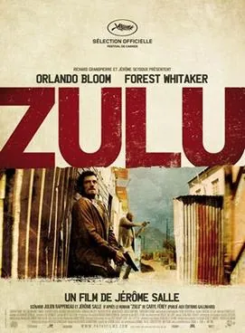

The genetics
The film's genetic element is a DNA frame-up. To close the investigation, the conspirators murder a second woman and plant DNA traces of the drug dealer Stan under her fingernails, and the police leadership uses the 'evidence' to blame him for the killings; the detectives' refusal to accept it drives the rest of the story. The deeper conspiracy draws on the real Project Coast, the apartheid government's chemical and biological weapons programme: in the film, one of its scientists has developed a synthetic drug intended to wipe out the black population and tested it on street children. That weapon is a drug, not a pathogen or a genetic agent, so the film's link to genetics lies in the forensic manipulation of DNA evidence. Planting another person's DNA at a crime scene is a real, if rarely documented, risk that forensic scientists take into account.
The story
In Cape Town, three homicide detectives investigate the murder of Nicole Weiss, a young woman beaten to death in the Botanical Gardens: Ali Sokhela, a Zulu traumatised by the murder of his father and his own mutilation under apartheid, Brian Epkeen, a divorced, hard-drinking white officer ashamed of his father, and the inexperienced Dan Fletcher. The trail leads to a drug dealer, Stan, and an ambush on a beach in which Fletcher is killed. When a second woman is found dead and Stan's severed head is delivered to the police, their superiors close the case, blaming Stan. Ali and Brian continue and discover that the drug behind the killings was created by Dr. Joost Opperman, a scientist from the apartheid regime's Project Coast weapons programme, to decimate the black population, and is distributed with the help of a private militia. After Ali's mother is murdered, he pursues Opperman into the Namib Desert and kills him before dying of his wounds.